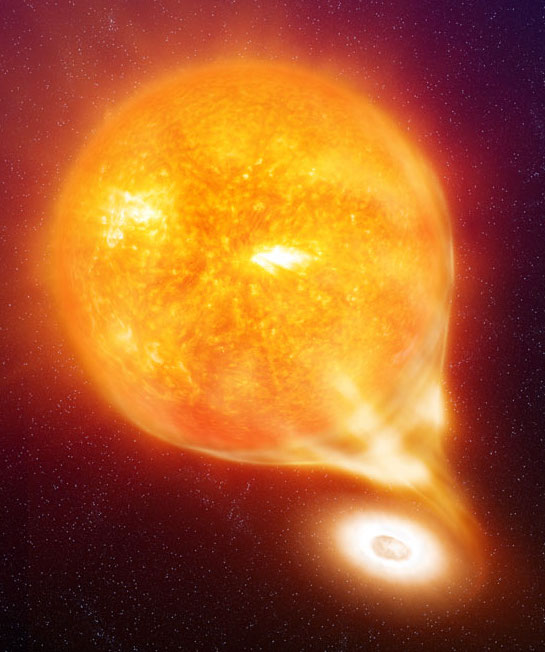

Cataclysmic Variables

Cataclysmic variables are interacting binaries in which a low-mass star fills its Roche lobe and transfers mass to its white dwarf companion. They are thus the progeny of the post-common envelope binaries we find inside planetary nebulae.I have extensively studied spiral shocks in those systems, making a comparison between theory and numerical simulations. I also did much observations of these systems, such as here, here, or here. A poster about this is available here.
I also looked at the surface flow on the companion star in a close binary system (see also part II here)
As mentioned here, I also looked at the formaton of Lithium in nova.
More recently, I co-discovered an eclipsing dwarf nova inside a planetary nebula.
My interest in these stars, and the use of Doppler tomography to study them, led me to organise two workshops on indirect imaging techniques that led to the publication of two books.